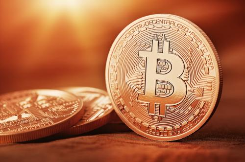

As history tells, there has always been a type of physical currency. Be it gold or silver, the barter system, or the dollars of today, there is always an item that has value attached to it used in purchasing or obtaining items. People are now using debit cards, which allows you to have the same access to your cash while it is safely held in a bank. But slowly, a type of currency has surfaced, and that is cryptocurrencies.
Famously, Bitcoin is stamped as the currency of the future, but the larger idea is eliminating a physical currency and creating a level playing field for all. Throughout this article, we’ll use Bitcoin as our cryptocurrency example because they are a leader in the transition from a physical currency world to an all electronic currency.

There are a multitude of benefits for having a world where physical currency doesn’t exists. First, is the ease of access and sending of money. PayPal is a great example of a benefit. Because with PayPal, you can send most money for free without ever touching cash. Once money is received, you can move it to your personal checking account in days.
As seen above, having a world without a physical currency allows for an easy flow of money. It also gives you quick access to all funds. This is also a great way to have everyone connected and save money. The only issue is that not everyone is adoptive of this new way of money.
A huge draw back for a world with no physical currency is that everyone has to be on board with the elimination of currency. It is difficult for a financial structure without physical currency to work if only ten percent of people are using it.
Jumping back to Bitcoin, the idea is revolutionary. The reason it is not widely used yet is because not everyone accepts it. It works similar to PayPal in that the transfer of money is easy. In most cases free. You can store Bitcoin on your phone, servers, or however you choose. Since not many people use it, it currently is not the most effective way, hence we still have physical currency.
The younger generation will grow older. Once this happens, there is a larger chance that this type of currency and financial system takes hold. Many young people already maintain life without holding physical cash, and they are also easily motived to adapt new technologies, which is a strong point for cryptocurrencies such as Bitcoin.
Overall, it is going to be quite some time before the world eliminates physical currency. But the evidence is there that the transition is already happening. From debit cards to PayPal, most people are already living in a cashless world without even knowing it. The tilting point is when mass adoption occurs.
Business leaders such as Apple with Apple Pay are only helping to lead the way. Also, the addition of Bitcoin and other cryptocurrencies are only expediting the evolution. Banks are adopting phone applications and investment companies completing everything electronically. We are closer then many people realize. The only item standing in the way from our world becoming an electronic finance world is people adopting and trusting the new system of money movement.
The history of money concerns the development of social systems that provide at least one of the functions of money. Such systems can be understood as means of trading wealth indirectly; not directly as with barter. Money is a mechanism that facilitates this process.
Money may take a physical form as in coins and notes, or may exist as a written or electronic account. It may have intrinsic value (commodity money), be legally exchangeable for something with intrinsic value (representative money), or only have nominal value (fiat money).